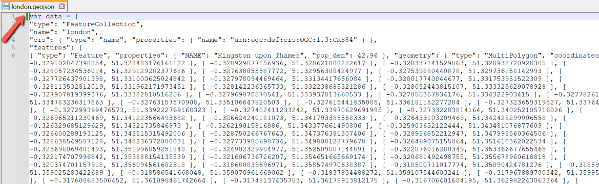

Overview
In this lab, we will create a choropleth map using GeoJSON data.
Please submit your assignment via Dropbox on D2L according to the requirements in the Deliverables section at the bottom.
Due: 11:59 pm, Wednesday, 10/5
Set up basemap
- Before you start, create a new file folder (e.g., lab3) for this lab.
- If you need to download the leaflet files, download the zip folder from here.
- Open your html editor (e.g., Atom) and add the following lines to set up the basemap using the Mapbox light canvas.
Note you may need to modify the red part if you want to use relative url to point to the leaflet files stored in a different folder. And replace the access token (Check the instructions if in doubt).
<!DOCTYPE html> <html> <head> <title>Lab 2</title> <link rel="stylesheet" href="leaflet.css" /> <script src="leaflet.js"></script> </head> <body> <div id="map" style="height: 500px"></div> <script type="text/javascript"> var map = L.map('map').setView([37.8, -96], 4); L.tileLayer('https://api.tiles.mapbox.com/v4/{id}/{z}/{x}/{y}.png?access_token={accessToken}', { attribution: 'Map data © <a href="http://openstreetmap.org">OpenStreetMap</a> contributors, <a href="http://creativecommons.org/licenses/by-sa/2.0/">CC-BY-SA</a>, Imagery © <a href="http://mapbox.com">Mapbox</a>', maxZoom: 4, minZoom: 4, id: 'mapbox.light', accessToken: 'your mapbox public access token' }).addTo(map); </script> </body> </html>Then, save the document asmap3.htmlin your lab3 folder. Please remember to specify the file extension as .html to make it work. If you did everything right, your map should look like:
Prepare GeoJSON data
In Lab 2, we have introduced how to add markers to your map manually using their geographic coordinates. But you may wish to work with more complex spatial features as in a desktop GIS. So we introduce GeoJSON:
- GeoJSON is a format for encoding a variety of geographic data structures (http://geojson.org).
- If you have the shapefiles, working with GeoJSON is easy. Launch QGIS and add the shapefile (QGIS is open source and cross-platform so you can download it and work at home). To prepare your data for web mapping, I have two general recommendataions:
(1) Simplify the geometry of your features to generate smaller files. You can do this easily in QGIS, go to Vector > Geometry Tools > Simplify Geometries. Higher tolerance values would generate simpler features (smaller file size) but also lose some details.
(2) Delete those attribute fields that you do not need. In this case, I only kept two fields: NAME10 (state names) and MED_age (median age). - Next in the Layers panel of QGIS, right-click the layer and select Save As.... In the dialog window, set Format to GeoJSON, name the output file, and be sure to set the CRS to EPSG:4326 - WGS 84 (see image below). Then click OK to save the GeoJSON file.

- Open the GeoJSON file in a text editor. Place the following at the very beginning of the GeoJSON document (see image below):
var data = - Save the changed document as
data.jsto yourworking folder(where your html file is saved, it should contain 6 items now). Note the file extension is.js.
Here is a copy of the (data.js) file I created. - In the
headsection of yourmap.htmldocument, includedata.js:<script type="text/javascript" src="data.js"></script> - In your map
scriptsection, include the following to add the data.L.geoJson(data).addTo(map);
The GeoJSON data layer is now added to the map! Take a look at the sample code if needed.
Add styles
If you will be working with point data, check out this Leaflet tutorial on how to define markers with custom icons.
- In this example, we will color the states according to their median age. For choosing colors, Leaflet recommends ColorBrewer. Using this tool, I picked the 4-class Greens:

- Now we need to create a function that returns a color based on median age (Place the following lines above the line of
L.geoJson):function getColor(value) { return value > 40 ? '#238b45': value > 37.5 ? '#74c476': value > 35 ? '#bae4b3': '#edf8e9'; }
Note that you will need to change the break values and colors according to your data. Try to classify your data in QGIS or ArcGIS may help determine the intervals. Please follow the syntax carefully, though you do not have to fully understand it. - Following the
getColorfunction, we define another function for the GeoJSON layer so that itsfillColordepends onfeature.properties.MED_ageproperty:function style(feature){ return { fillColor: getColor(feature.properties.MED_age), weight: 2, opacity: 1, color: 'white', dashArray: '3', fillOpacity: 0.9 }; }Replace MED_age with your field name.
For the function attributes, you may tell what they do by their names, e.g.,fillColoris to define the fillcolor of the features,weightis to define the weight of the boundary lines, etc. Please try to customize the appearance by adjusting the corresponding values. - To make the functions work, we have to modify the line of
L.geoJsonto:L.geoJson(data, {style:style}).addTo(map);
Please make sure the two functions are defined aboveL.geoJson.
Now we have a map with colors (sample code) !
Add interactions
This part is long, so take a break if you need.
First, Let's make the states highlighted visually when they are hovered with a mouse.
- In your map
scriptsection, include the function to define the mouseover event:function highlightFeature(e) { var layer = e.target; // You can adjust the attribute values below to change the styles of features on mouseover layer.setStyle({ weight: 5, color: '#666', dashArray: '', fillOpacity: 0.7 }); if (!L.Browser.ie && !L.Browser.opera) { layer.bringToFront(); } } - Remove the line of
L.geoJson. Then include the following lines to define what happens on mouseout (paste directly without change):var geojson function resetHighlight(e) { geojson.resetStyle(e.target); }Thegeojson.resetStylemethod will reset the layer style to its default state (defined by our style function). For this to work, we defined the geojson variable to make it accessible. - As an additonal behavior, we define a mouse click event to zoom to the state level (paste directly without change):
function zoomToFeature(e) { map.fitBounds(e.target.getBounds()); } - Now we will define the
onEachFeaturefunction to add those behaviors to our us state layer. If you have used the same function and variable names so far, you can paste the lines below directly without making any change.function onEachFeature(feature, layer) { layer.on({ mouseover: highlightFeature, mouseout: resetHighlight, click: zoomToFeature }); } geojson = L.geoJson(data, { style: style, onEachFeature: onEachFeature }).addTo(map);Use the mouse to hover over and click the features in the map to see the changes we have made (sample code):
When the mouse hovers over a state, it would be helpful to display some useful information (not only being highlighted visually). Here we will set up popups to show the state's name and median age. The Leaflet tutorial Interactive Choropleth Map gives an example of using custom control to display information.
- Place the following lines in the
highlightFeaturefunction to set up the popups on mouseover:// Define the two variables to hold the values of the state names and their median age values. // Change these according to your data. You are free to use any names for the variables, but be sure to use the original field name in the attribute table (case-sensitive!!!). var name = layer.feature.properties.NAME10; var age = layer.feature.properties.MED_age; L.popup() .setLatLng(e.latlng) // Define what you want to display in the popups. // You will need to work with strings here. Review the html tags <br> and <b> if needed. .setContent('Median Age' + '<br><b>' + name + '</b><br>' + age) .openOn(map)
- Then, we will add legend to the map. In the
headsection of your map document, place the following lines to define the style of the legend:<style> /* Change the values below to adjust the appearance of the legend */ .legend { padding: 6px 8px; line-height: 18px; background: rgba(255,255,255,0.9); box-shadow: 0 0 15px rgba(0,0,0,0.2); border-radius: 5px; } /* Change the values below to adjust the appearance of the legend color boxes */ .legend i { width: 18px; height: 18px; float: left; margin-right: 8px; opacity: 0.7; } </style> - Next, in the
scriptsection, add the following lines to define how the legend will be created in your map:var legend = L.control({position: 'bottomright'}); // Try the other three corners if you like. legend.onAdd = function (map) { var div = L.DomUtil.create('div', 'legend'), grades = [0, 35, 37.5, 40]; // The break values to define the intervals of median age div.innerHTML = '<b>Median Age <br> 2010 <br></b>'; // The legend title, in this case it's Median Age 2010 // Loop through our median age intervals and generate a label with a colored square for each interval. // If you are creating a similar choropleth map, you do not need to change lines below. for (var i = 0; i < grades.length; i++) { div.innerHTML += '<i style="background:' + getColor(grades[i] + 1) + '"></i>' + grades[i] + (grades[i + 1] ? '–' + grades[i + 1] + '<br>' : '+'); } return div; }; legend.addTo(map);The legend will be created at the bottom right corner of your map with the defined styles and content.
The final results with the popups and legend are shown on the top of this page (Take a look at the sample code if needed.)
Add the map to your portfolio
- Copy and paste your working folder to your portfolio's directory.
- Edit your portfolio's HTML file to place this to where you want to put the map.
<iframe src="workingfoldername/map.html" width=100% height=500px></iframe>
Please use the name of yourworking folderand adjust theheightvalue accordingly. You may wish to review the iframe tag to further adjust the layout.